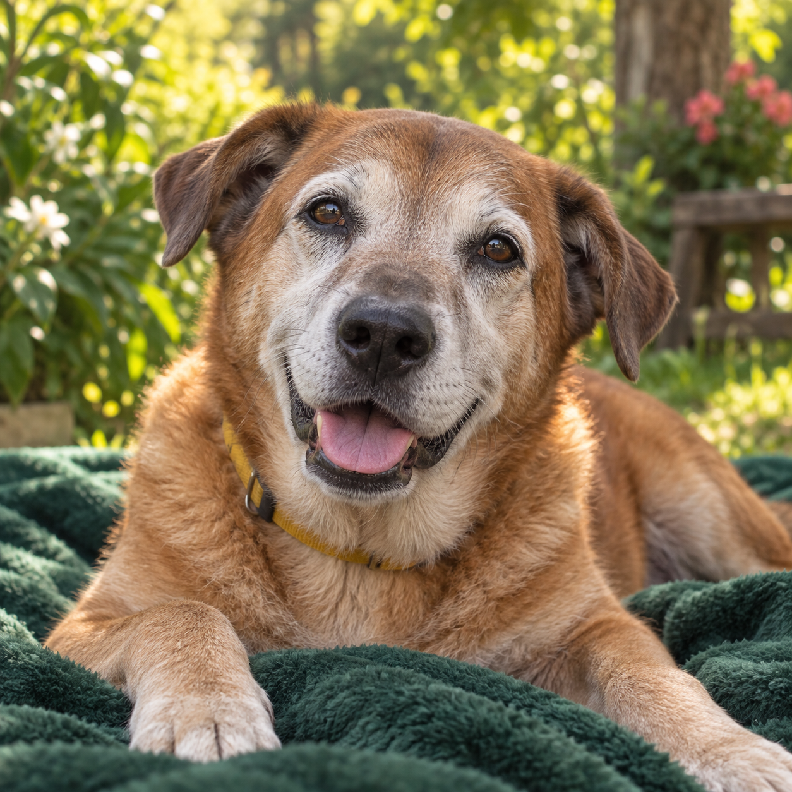
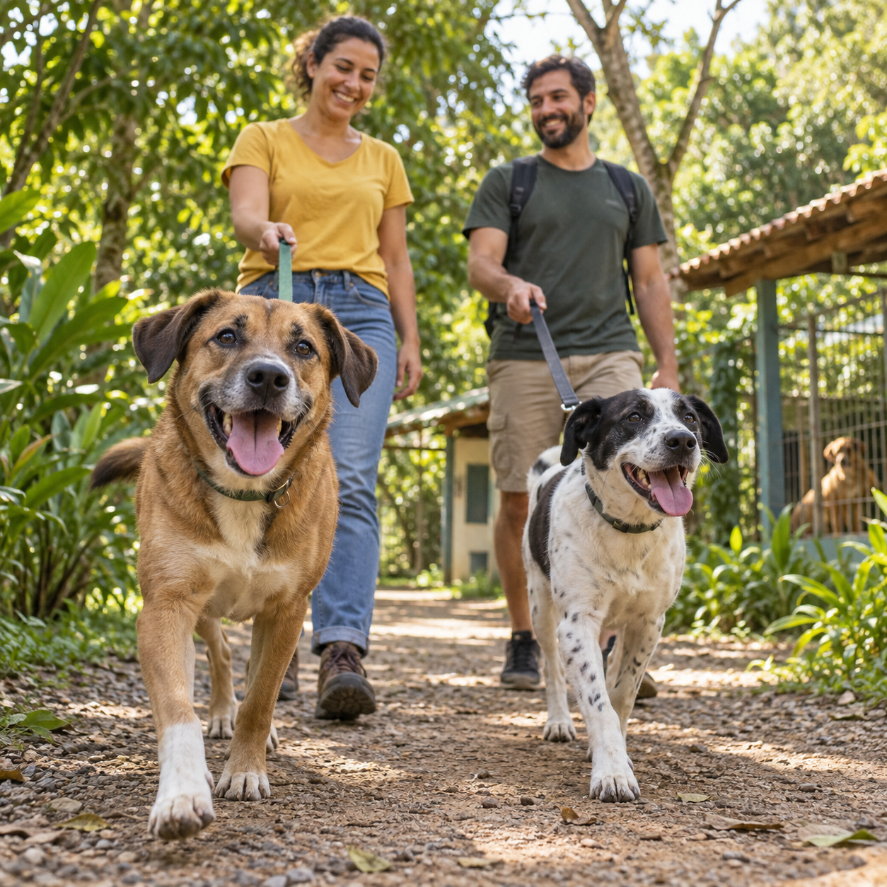

Um novo capítulo para quem já viveu tanto
O amor não
tem idade.
Nossos cães idosos ainda têm muito amor para dar. Ao apadrinhar, você faz parte de uma rede de cuidado e novas chances.
Quero apadrinhar um idoso ↗
Um novo capítulo para quem já viveu tanto
Nossos cães idosos ainda têm muito amor para dar. Ao apadrinhar, você faz parte de uma rede de cuidado e novas chances.
Quero apadrinhar um idoso ↗
Rolê no Abrigo
Venha passear com nossos cães. Um pouco do seu tempo pode ser a melhor parte do dia deles.
Quero participar do rolê ↗
Adoção responsável
Encontre um amigo para a vida e escreva uma nova história com a gente.
Encontre seu novo amigo ↗
Apadrinhamento de cães idosos
Você pode fazer parte da vida de um cão idoso, mesmo sem poder adotá-lo.
Apoio para o bem-estar, conforto e atenção que os cães idosos precisam no dia a dia.
Toda idade merece um novo começo
Cada um tem seu jeito. Todos têm amor de sobra.
Porte médio · Tranquilo e companheiro
Conheça o apadrinhamento →Uma
nova chance
Porte médio · Carinhosa e curiosa
Sobre a adoção →Porte médio · Brincalhão e gentil
Conheça o Rolê no Abrigo →Cheia de energia
Porte pequeno · Alegre e afetuosa
Sobre a adoção →Porte grande · Calmo e leal
Conheça o apadrinhamento →Porte médio · Doce e companheira
Sobre a adoção →Rolê no Abrigo
Escolha uma manhã para conhecer o abrigo, caminhar com os cães e deixar o dia deles mais leves.